Tratamos la candidatura como una marca de café de especialidad: sobria, cálida y con arraigo. El corazón del sistema es un emblema-sello que funciona como firma de confianza, acompañado de retratos en arco de estilo editorial, líneas topográficas que evocan la cordillera y el Nevado del Ruiz, e íconos de línea propios para cada propuesta.
La paleta es cálida y elegante —crema, espresso, terracota, verde olivo y dorado— para conectar con el electorado desde la cercanía y el orgullo cafetero, sin recurrir al ruido visual.